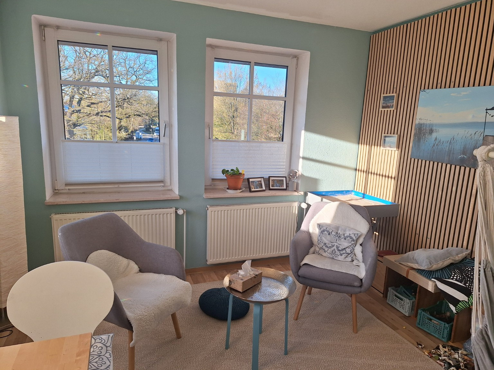
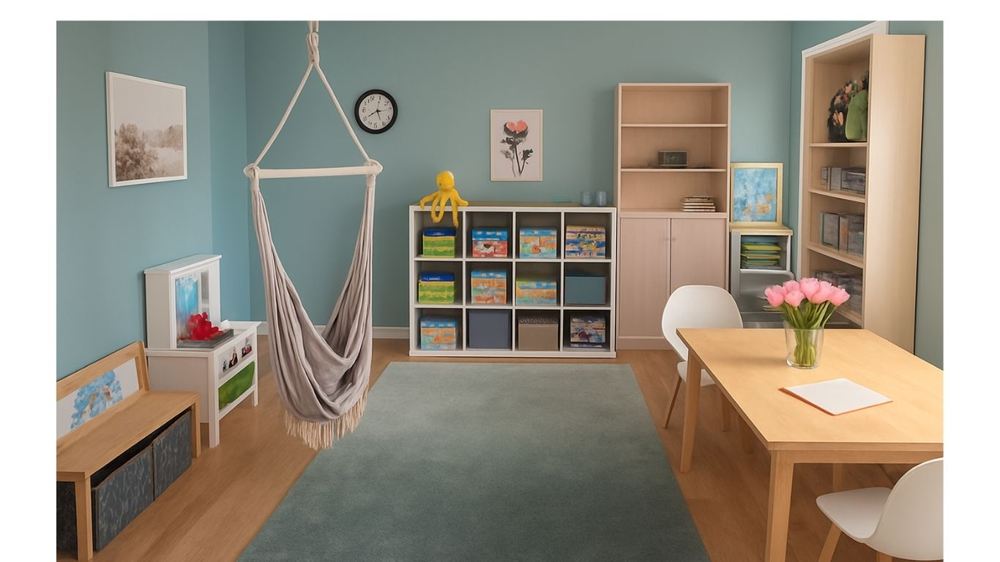
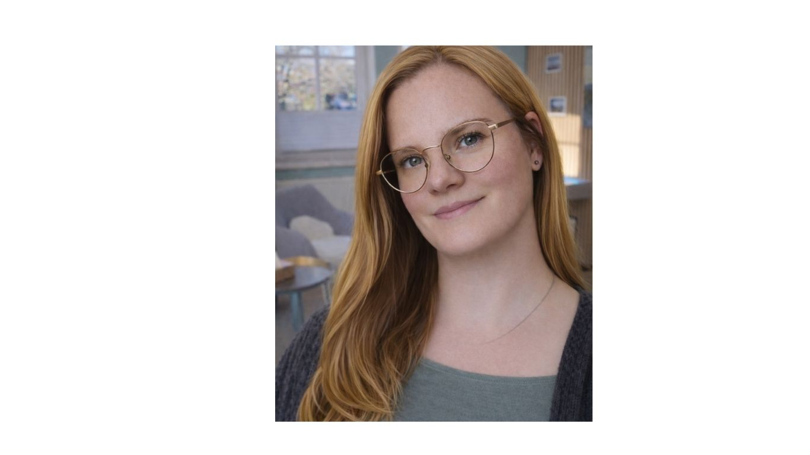
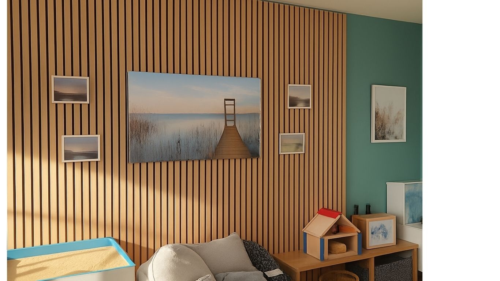
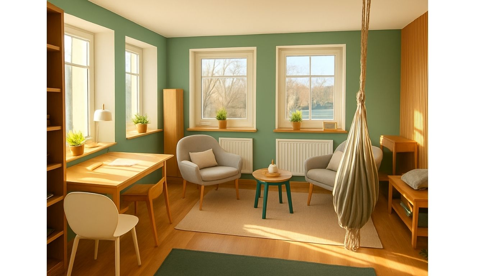

Ich begleite Eltern und Familien dabei, wieder ruhig, klar und in Beziehung mit ihrem Kind zu kommen.
Erstgespräch anfragen
Konflikte nehmen zu, Gespräche eskalieren schneller oder Sie fühlen sich unsicher im Umgang mit Ihrem Kind.
Vielleicht gibt es Schwierigkeiten in der Schule oder Ihr Kind zieht sich zunehmend zurück.
Sie sind damit nicht allein.

Ich unterstütze Eltern und Familien in herausfordernden Situationen – mit Klarheit, Ruhe und einer tragfähigen Beziehungsgestaltung.
Ein besonderer Schwerpunkt liegt auf Schule und Schulabsentismus.
Ich habe Sonderpädagogik auf Lehramt studiert und mehrere Jahre im schulischen Kontext gearbeitet.
Dadurch bringe ich viel Erfahrung im Umgang mit Kindern, Jugendlichen und Familien mit – insbesondere auch bei schulischen Herausforderungen.
Aktuell befinde ich mich in Ausbildung zur Kinder- und Jugendlichenpsychotherapeutin.
Mir ist wichtig, Eltern nicht zu bewerten, sondern gemeinsam tragfähige Wege zu entwickeln.


Ein geschützter Ort für Gespräche, Klarheit und neue Perspektiven.
Eine ruhige, freundliche Umgebung, in der sich sowohl Eltern als auch Kinder sicher fühlen können.

Mirja Leverenz
Kreyenstr. 35a
26127 Oldenburg
Telefon: 0176-20740558
E-Mail: haltung-und-verbindung@posteo.de